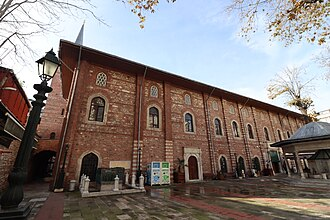

概要
La mosquée des Arabes est une mosquée située à Istanbul, dans le district de Beyoğlu. Construit sur la base d'une église dédiée à saint Paul et saint Dominique et bien qu'ayant été endommagé pendant la période ottomane, l'édifice est un des fleurons de l'art gothique de Constantinople.
جامع العرب وهو جامع يقع في إسطنبول شمالها من الجهة المقابلة لاسطنبول القديمة وتحت برج غلاطة وهو المسجد الوحيد بتركيا الذي بني بالطريقة الأندلسية. تشبه منارته المربعة منارات الأندلس والمغرب العربي، ولا يوجد بالمسجد قبة فسطحه منبسط ومستطيل الشكل ويوجد خارج المسجد من الجهة الجنوبية الشرقية قبر القائد العسكري الأموي مسلمة بن عبد الملك.
Arap Mosque is a mosque in the Karaköy quarter of Istanbul, Turkey. The building was originally a Roman Catholic church erected in 1325 by the friars of the Dominican Order, near or above an earlier chapel dedicated to Saint Paul in 1233. Although the structure was altered during the Ottoman period, it is the only example of medieval religious Gothic architecture remaining in Istanbul.
Arap Camii, Türkiye'nin İstanbul iline bağlı Beyoğlu ilçesindeki Galata semtinde yer alan cami. Önceleri Aziz Paolo (San Paolo) veya Aziz Domeniko Kilisesi (San Domenico) olarak bilinen ibadethane, 1453 yılında şehrin Osmanlı egemenliğine girmesinin ardından camiye çevrildi.
Masjid Arab Istanbul atau yang lebih dikenal dengan Masjid Galata Ortamı adalah sebuah masjid peninggalan Bizantium yang berada di kawasan distrik Karaköy, Provinsi Istanbul, Turki. Bangunan ini awalnya merupakan sebuah bekas gereja Ortodoks Timur, sebelum beralih ke masjid pada masa Pengepungan Konstantinopel, tetapi setelah Perang Salib Keempat pada tahun 1233 bangunan ini beralih menjadi kapel Katolik yang didedikasikan untuk Saint Paul, lalu pada tahun 1325 bangunan ini kembali berubah menjadi gereja Katolik Roma yang didedikasikan untuk Saint Dominikus.
عرب مسجد (ترکی: Arap Camii, معنی عرب مسجد) استنبول، ترکی میں ایک مسجد ہے۔ عمارت اصل ایک رومن کیتھولک گرجا تھا۔
Die Arap-Moschee, auch Arabische Moschee, ist eine Moschee im Istanbuler Stadtviertel Karaköy. Das Gebäude wurde 1325 als römisch-katholische Klosterkirche des Dominikaner-Ordens errichtet, anstelle der früheren Kapelle St. Paul aus dem Jahre 1233. Obwohl im Osmanischen Zeitalter einige bauliche Veränderungen vorgenommen wurden, stellt sie heute das einzig verbliebene gotische religiöse Bauwerk des Mittelalters Istanbuls dar.
La Mezquita de Arap, es una mezquita de Estambul que se encuentra en una antigua iglesia católica dedicada a San Pablo y a Santo Domingo. Aunque se modificó la estructura durante el periodo otomano, representa el ejemplo más común de arquitectura gótica en Constantinopla aún en pie.
La moschea Arap è una moschea sita nel quartiere di Karaköy del distretto di Beyoğlu, a Istanbul, in Turchia. Venne costruita nel 1325 dai frati domenicani, vicino o accanto ad una vecchia cappella cattolica del XIII secolo dedicata a san Paolo nel 1233. Anche se le strutture vennero alterate durante l'Impero ottomano, essa rappresenta l'unico esempio di architettura gotica ancora esistente ad Istanbul.
A Mesquita Árabe é uma mesquita de Istambul que se no passado foi uma igreja católica dedicada a São Paulo e a São Domingos. Apesar da sua estrutura e função ter sido mudada durante o período otomano, ainda constituiu o melhor exemplo da arquitetura gótica em Constantinopla ainda existente.
阿拉伯清真寺 是一座清真寺，位于土耳其伊斯坦布尔的贝伊奥卢区（中世纪的加拉达区）的加拉达法庭街，金角湾北岸不远处，周围被工匠店铺包围。
Це́рковь Свято́го Па́вла — доминиканская церковь, построенная в константинопольском предместье Галата в 1233 году. Выделялась среди окружающей застройки своей квадратной колокольней, более свойственной готическим храмам Италии. В течение последующих столетий оставалась в руках генуэзских купцов, многие из которых захоронены в здешней крипте.
Arap Camii este o moschee din Istanbul. În evul mediu a fost biserica mănăstirii domnicane din cartierul Pera, locuit preponderent de italieni.
地図上の位置
資料とリンク
- Wikipédia — Français
- Wikipédia — العربية
- Wikipédia — English
- Wikipédia — Türkçe
- Wikipédia — Bahasa Indonesia
- Wikipédia — اردو
- Wikipédia — Deutsch
- Wikipédia — Español
- Wikipédia — Italiano
- Wikipédia — Português
- Wikipédia — 中文
- Wikipédia — Русский
- Wikipédia — Română
- Wikidata — Q642478
データ：ウィキデータ（CC0）、3か月ごとに更新。年は、その建物について知られている最も古い建設年です。のちにモスクになった建物（アヤソフィアなど）の場合は、元の建物の建設年です。写真：ウィキメディア・コモンズ。作者とライセンスは各写真のページにあります。